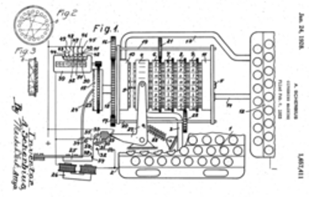
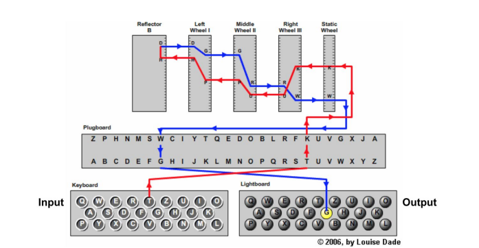

Enigma
Die Enigma-Maschine wurde im 2. Weltkrieg von dem deutschen Militär genutzt, um ihre strategischen Funksprüche zu verschlüsseln. Lange Zeit waren diese nicht zu entschlüsseln und die deutsche Kommunikation war sicher.
Das Grundprinzip der Maschine ist einfach. Ein Text wird über eine Tastatur eingegeben, diese Eingabe wird durch mehrere, sich mit jedem Zeichen drehende Zahnräder in eine Ausgabe umgewandelt. Durch die sich drehenden Räder wurde die Verschlüsselung stets von den vorausgehenden Zeichen beeinflusst und erschwerte so das Herbeiführen eines Schlüssels stark, da ja weder die vorausgehende Eingabe noch der Schlüssel bekannt waren. [14] Als besonders sicher galt diese, da sie über 3·10114 [14] mögliche Schlüssel verfügte, was Brute-Force, das einfache Ausprobieren aller Schlüssel, praktisch unmöglich machte.

Sicherheit
Die Anzahl Schlüssel kommt von der Anzahl der Konfigurationsmöglichkeiten. 26 Buchstaben auf den Rotoren und 3 Rotoren hintereinander. Die Rotoren hatten 26 mögliche Positionen für 26 Buchstaben. Diese wurden anders wie bei der Cäsar-Verschlüsselung nicht einfach verschoben, sondern durchmischt. Das bedeutet in der ersten Position können 26 Buchstaben platziert werden, danach 25, danach 24 und so weiter. Dies führt zu 26 · 25 · 24 … · 1 möglichen Konfigurationen, was mathematisch auch als 26! notiert wird.
Danach gab es 3 Rotoren, die hintereinander geschaltet wurden. Da wir dieselbe Konfiguration nicht mehrmals verwenden möchten, gibt es in dem zweiten Rotor nur noch 26! – 1 mögliche Rotoren und in dem danach 26! – 2. Dies führt zu 26! · (26! – 1) · (26! – 2) was ungefähr 6.55·1079 möglichen Kombinationen entspricht.
Diese Rotoren konnten jeweils 26 mögliche Startpositionen einnehmen, also 263 mögliche Startpositionen, was 17'576 entspricht.
Da die Rotoren einander bewegten gab es noch zwei äussere Ringe, welche diese Bewegung beeinflussten. Diese haben jeweils 26 mögliche Konfigurationen, also 262.
Am Schluss dieser Rotoren gab es eine Reflektorenplatte, welche für jeden Buchstaben einen Kontaktpunkt hatte. Diese wurden durch 13 Kabel verbunden. Nachdem ein Kabel in einen Kontaktpunkt gesetzt wurde, gab es noch 25 mögliche Punkte, von denen gewählt werden musste. Nachdem beide verbunden wurden, gab es noch 24 mögliche Verbindungen. Dies wurde mathematisch als 25 · 23 · 21 · … · 1 notiert, also 25!!
Im letzten Schritt, dem «plugboard» wurde ein Buchstabe mit einem anderen getauscht. Es konnte also ein Kabel eines Buchstabens mit anderen verwendet werden. Mit 13 Kabeln führte dies wiederum zu 25!! möglichen Kombinationen.
Rechnen wir nun alle Faktoren zusammen, also 26! · (26! – 1) · (26! – 2) · 263 · 262 · 25!! · 25!! ergibt dies etwa 4.87·10112 möglichen Konfigurationen. Zieht man die Möglichkeit für unterschiedliche Mengen Kabel im letzten Schritt in Betracht, erhält man die zuvor beschriebenen 3·10114 Möglichkeiten
Probleme
In der Praxis sah das Ganze doch ein wenig anders aus. Da die Deutschen dieselben drei Rotoren für alle ihre Maschinen benutzten, wurden diese 6.55·1079 auf stolze 6 beschränkt, da die einzigen verbleibenden Möglichkeiten der Rotoren ihre Reihenfolge war, also 3! oder 6.
Der Wert der Startpositionen veränderte sich nicht, also weiterhin 263.
Die äusseren Ringe verwendeten oft denselben Wert, was deren Anzahl Konfigurationen zu 1 schrumpfte.
Ebenfalls gab es nur eine Reflektorenplatte, weshalb die Anzahl Konfigurationen wiederum zu 1 machte, sobald die Alliierten an eine deutsche Enigma kamen.
Schlussendlich wurden meistens 10 Kabel für das «plugboard» verwendet, was dort zu 1.5·1014 möglichen Kombinationen führte.
Alles zusammen gab dies das Folgende: 3! · 263 · 1.5·1014 = 1.58·1019
Die fatale Schwachstelle der Enigma-Maschine war ein Mix aus mehreren menschlichen und designtechnischen Faktoren. Bereits im Jahr 1932 wurde Enigma im polnischen Kryptologiebüro mathematisch geknackt, aber vom Mathematischen in die Realität zu kommen ist schwer. Polen begann mit Grossbritannien zusammenzuarbeiten, um die Nachrichten zu entschlüsseln. Schlussendlich wurde Enigma folgenderweise geknackt: Einerseits konnte die verschlüsselte Version eines Buchstabens nie der Buchstabe selbst sein, was den Kryptoanalysten Grossbritanniens einen Eingangspunkt gab, andererseits wurden oft faule Einstellungen genutzt (Name der eigenen Freundin als Schlüssel, die drei Buchstabenräder auf AAA/BBB/CCC) und stets waren erratbare Passagen vorhanden (Wetterberichte begannen mit WETTER, viele Nachrichten endeten mit HEIL HITLER).
Dennoch brauchte die Entschlüsselung einige Zeit. Um den Prozess zu beschleunigen, wurden mehrere elektromechanische Maschinen, die «Bombe», gebaut, die pro Sekunde tausende Kombinationen prüften. Für die damalige Zeit war diese ein fantastisches Werkzeug, doch heutige Computer übertreffen sie bei weitem und es wurden bereits mehrere damals noch unentschlüsselte Botschaften mittels moderner Computer und Brute Force entschlüsselt.

Enigma I
Walzen
Umkehrwalze
Schickt das Signal durch die Walzen zurück.
Walze links
GrundstellungÜbertrag:
Aktuell A
Walze mitte
GrundstellungÜbertrag:
Aktuell A
Walze rechts
GrundstellungÜbertrag:
Aktuell A
Steckerbrett
Zwei Buchstaben anklicken, um sie mit einem Kabel zu vertauschen. Einen gesteckten Buchstaben anklicken, um das Kabel zu entfernen.
Die Enigma ist umkehrbar: Wird der Geheimtext mit derselben Grundstellung eingegeben, erscheint wieder der Klartext. Ein Buchstabe wird dabei nie zu sich selbst verschlüsselt.
Lampenfeld
Signalweg des letzten Buchstabens
━ Hinweg · ━ Rückweg · oberste Zeile einer Walze = Buchstabe im Sichtfenster